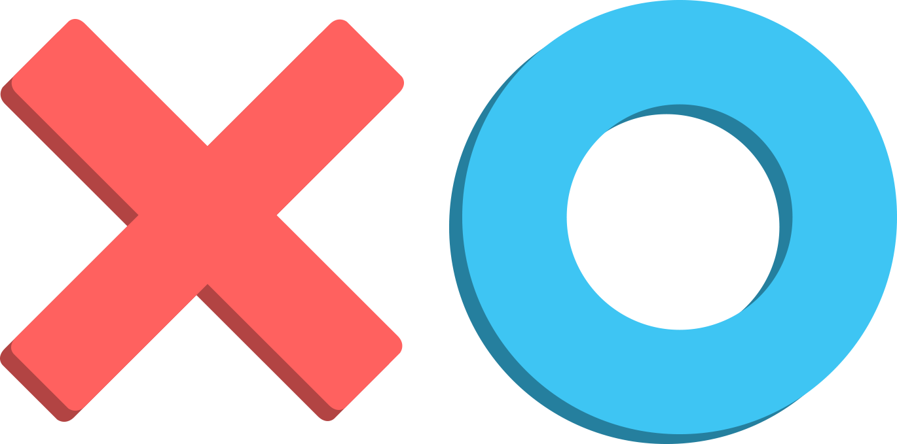

⭐⭐⭐⭐
Tic-Tac-Toe, also known as Noughts and Crosses, is a classic and timeless game enjoyed by
people of all ages around the world. Despite its simplicity, Tic-Tac-Toe offers a surprising depth
of strategy and tactics. In this guide, we'll explore the fundamentals of the game and provide you
with some tips and strategies to help you become a Tic-Tac-Toe master.
How To Play?
Tic-Tac-Toe, also known as Noughts and Crosses, is a straightforward game played on a 3x3 grid. The
objective is to be the first player to form a line of three of your symbols (either X or O)
horizontally, vertically, or diagonally. Here are the basic rules and steps to play Tic-Tac-Toe:
Setup:
Draw a grid with three horizontal rows and three vertical columns. This grid creates nine cells or
squares.
Decide which player will be "X" and which will be "O." You can also use other symbols like "✕" and
"O."
Gameplay:
The game typically starts with an empty grid.
Players take turns, starting with the "X" player.
On your turn, place your symbol (X or O) in an empty cell on the grid. You can do this by drawing an
"X" or an "O" inside the chosen cell.
Players continue to take turns, one move at a time, until one of the following happens:
One player gets three of their symbols in a row, either horizontally, vertically, or diagonally, and
wins the game.
All nine cells are filled, resulting in a draw or a tie game. In this case, no one wins.
Winning Conditions:
To win, you need to create a line of three of your symbols (X or O) in any of the following ways:
Horizontal Line: Have three of your symbols in a row on the same horizontal line
(e.g., X X X or O O O).
Vertical Line: Have three of your symbols in a row on the same vertical line.
Diagonal Line: Have three of your symbols in a row on a diagonal line.
Ending the Game:
The game ends as soon as one player wins by forming a line of three of their symbols or when all nine
cells are filled, resulting in a draw. If a player wins, they are declared the winner, and if the
game ends in a draw, it's considered a tie.
Tic-Tac-Toe is a game that often ends quickly due to its simple nature, but it can also be a fun and
strategic pastime. It's suitable for players of all ages and skill levels, making it a popular
choice for a quick game of strategy and competition.
.png)